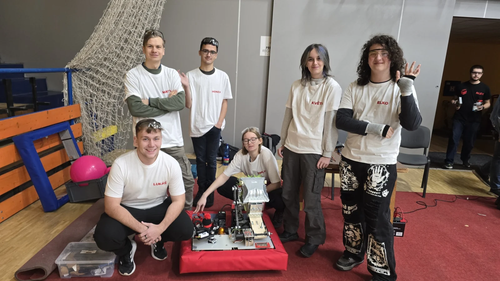
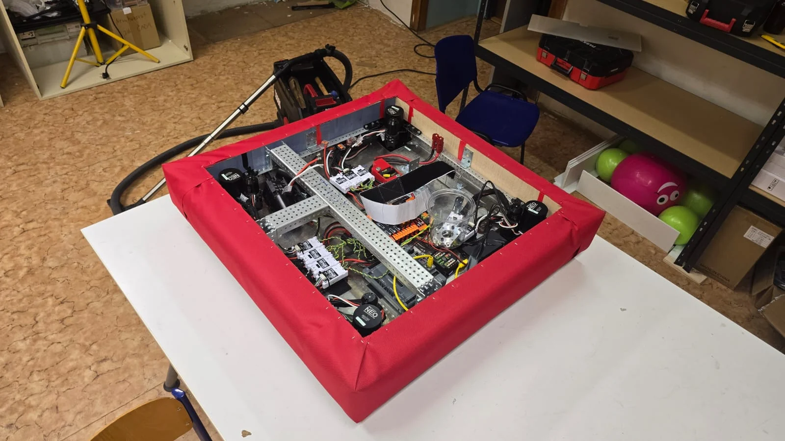
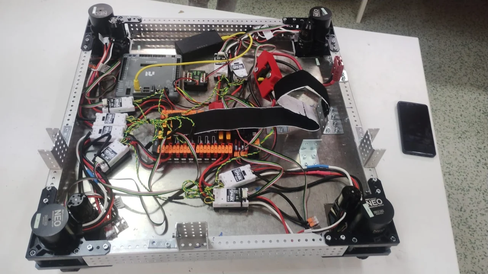
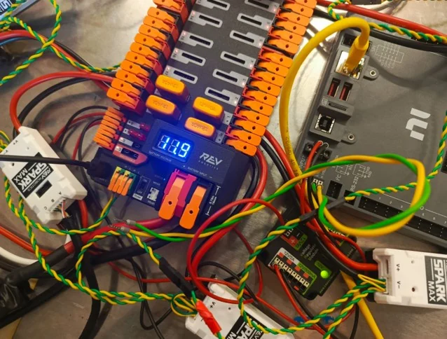
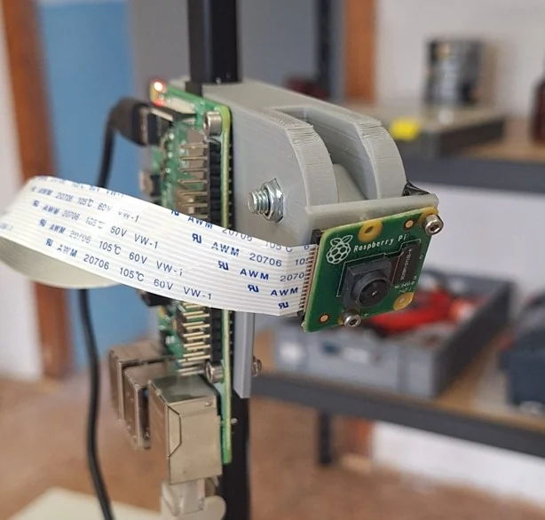
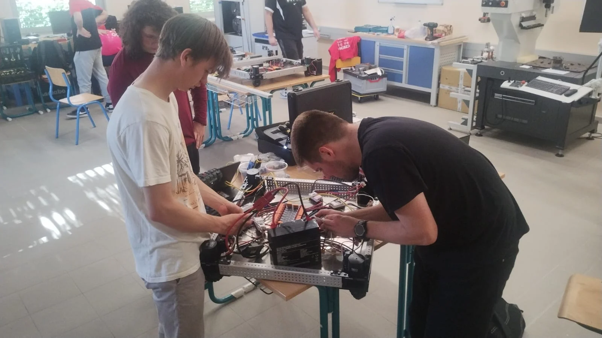
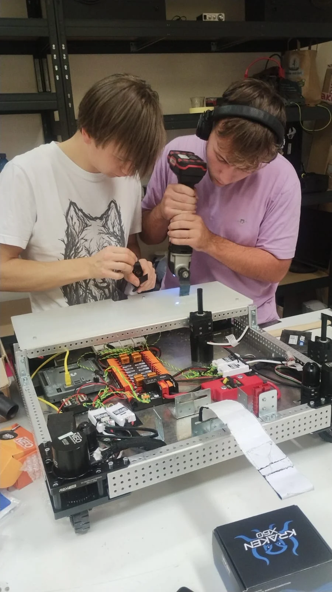

01 / CircuitBreakers
CIRCUIT BREAKERS
Jsme středoškolský robotický tým z Litoměřic. Navrhujeme, stavíme a programujeme soutěžní roboty.
scrolldolů
02 / Kdo jsme
Robotika od návrhu
až po závod.
CircuitBreakers je středoškolský robotický tým z Litoměřic. Fungujeme jako jeden ze čtyř regionálních týmů projektu RobUL.
V týmu se věnujeme mechanice, elektronice, programování i strategii. Robota průběžně navrhujeme, vyrábíme, testujeme a podle výsledků dál upravujeme.
Členové CircuitBreakers ↗CircuitBreakers = regionální tým v Litoměřicích
RobUL #9585 = výběrový FRC tým pro mezinárodní soutěž

03 / 27. 11. 2025
Regionální robotická soutěž / SLUNETA
Druhé místo.
Šestnáct bodů.
Regionální soutěž 2025.
Soutěž měla pět disciplín: laser, kroužky, bludiště, pohyblivé předměty a slalom. Robot je plnil manuálně i autonomně a rozhodovala hlavně spolehlivost, přesnost a příprava.
Výsledky a reportáž UJEP ↗TEAMPTS
CHOBOT26
CIRCUITBREAKERS16
PAPERBOX09
LEDbot04
04 / Robot

Robot / řízení / autonomie
Mechanika, řízení a autonomie.
Náš robotický projekt z roku 2025 používá WPILib a je napsaný v Javě. Ve veřejném repozitáři najdete swerve drive, autonomní režimy, práci s kamerou, QR detekci, telemetrii, PID/PIDF řízení i bezpečnostní logiku.
- DRIVE
- Swerve / YAGSL
- VISION
- kamera + QR / coprocessor
- AUTO
- bludiště, navigace, reakce na obraz
- STACK
- WPILib, PathPlanner, PhotonLib, CTRE, REV
Detaily robota / 2025



05 / Kód
Programování robota.
Veřejný repozitář zachycuje vývoj našeho robota během sezóny — od kalibrace kamery a autonomního průjezdu bludištěm přes řízení pohybu až po bezpečnostní logiku a úpravy před soutěží.
github.com/CircuitBreakersTKM RobUL-2025-Local ↗// veřejný snapshot našeho stacku
robot {
drivetrain: "swerve",
control: ["teleop", "auto"],
vision: "camera + QR",
tuning: "PID / PIDF",
telemetry: true,
season: "2025",
competition_ready: true
}06 / V terénu
Práce v dílně.
Montáž podvozku a zapojování elektroniky v naší dílně během sezóny 2025.


07 / RobUL
Čtyři města / jeden výběrový tým
Lokálně stavíme.
Společně reprezentujeme.
Od školního roku 2025/2026 funguje RobUL jako síť čtyř regionálních týmů. CircuitBreakers je regionální tým pro Litoměřice. Vybraní členové regionálních týmů mohou být součástí výběrového FRC týmu RobUL #9585.
Jak regionální týmy fungují ↗01CHOBOTChomutov
02PaperBoxŠtětí
03LEDbotÚstí nad Labem
04CircuitBreakersLitoměřice / CircuitBreakers
CircuitBreakers → RobUL #9585 / Denver Regional 2026
Dva členové CircuitBreakers v RobUL #9585.
CircuitBreakers na Denver Regional nesoutěžil jako samostatný FRC tým. Dva naši členové byli součástí výběrového týmu RobUL #9585, který dokončil kvalifikaci na 34. místě z 55 a poté nastoupil do vyřazovací části jako součást 7. aliance.
Příběh z Denveru ↗08 / Co dál
Napiš nám
na Instagram.
Zajímá tě programování, mechanika, elektronika, CAD nebo strategie? Pokud se chceš přidat, na něco se zeptat nebo se přijít podívat, napiš nám na Instagram. Tam se ti ozveme nejrychleji.